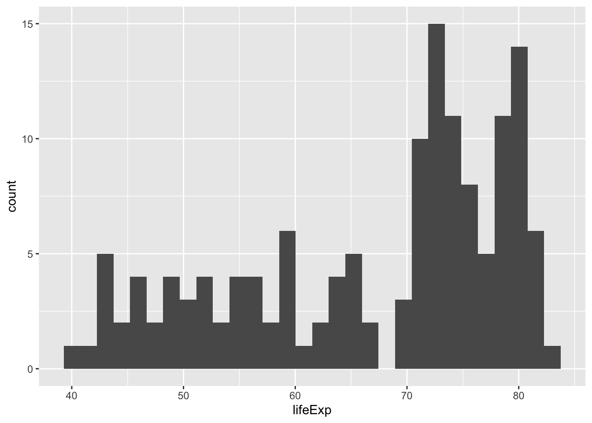
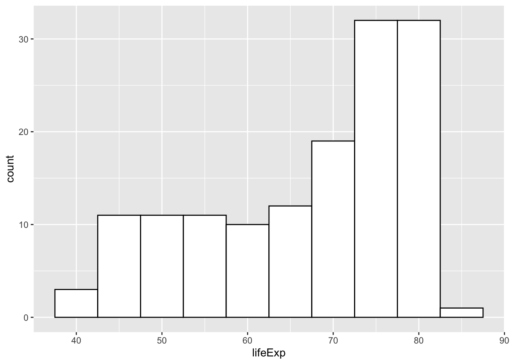
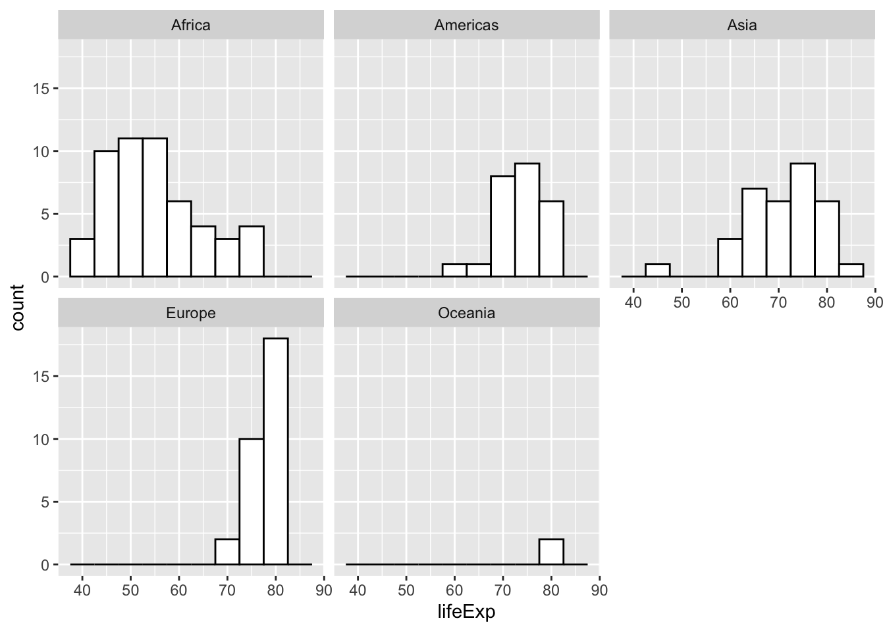
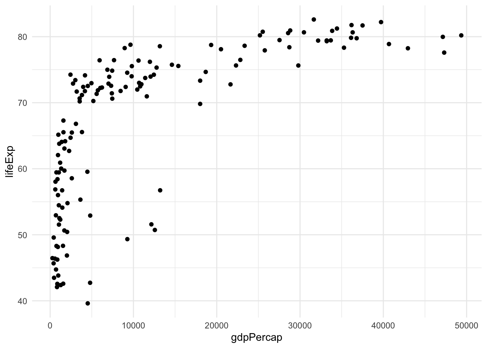
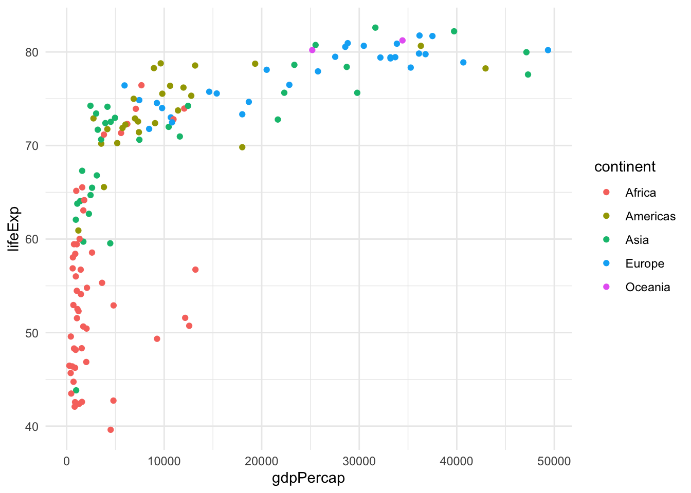
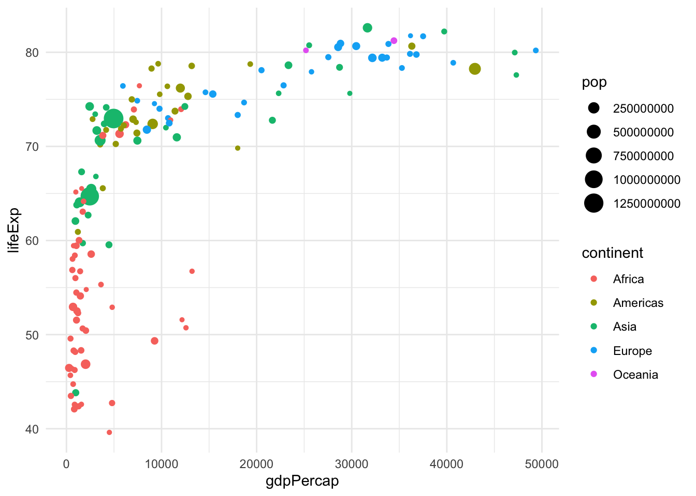
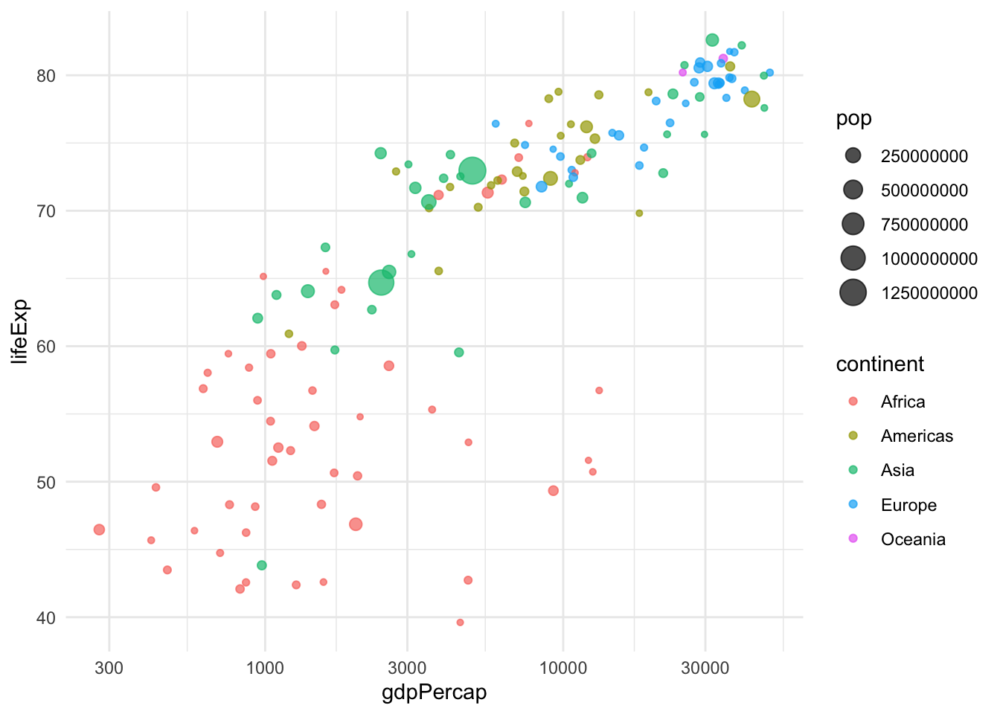
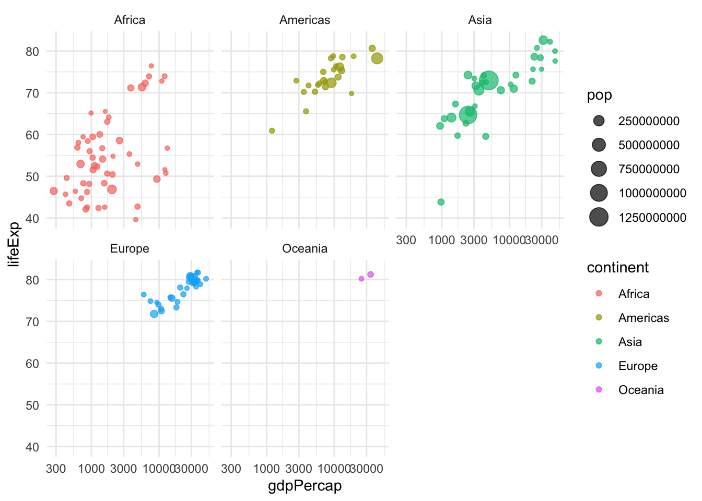

library(gapminder)
library(tidyverse)
library(ggplot2)
library(plotly)
options(digits=2, scipen=99)23 Visualization demo
This chapter walks through a built-in dataset in R to show you the concepts of creating visualizations. It works because the data behaves quite well for the demo – something we can’t count on in actual journalism datasets. This will make more sense if you watch the videos from the Knight Center course in Module 1, parts 2 and part 3, which refer to “visual encodings”.
Resources for visualization concepts and R programming
There are entire books and courses created by experts in visualization, and I don’t want to even try to repeat their work here. Instead, here are some resources to get you started with visualization concepts and R programming:
- The Knight Center’s Visualization for Storytelling and Discovery self-guided course, by one of the most accomplished practitioner and researcher of visualization in news, Alberto Cairo. The course is over, but the videos remain online. The first module is an excellent introduction to the concepts.
- The data visualization entries from R for Data Science, by Hadley Wickham
- Data Visualization, A Practical Introduction, by Kiernan Healy
- The R graph gallery, providing inspiration, coding examples and add-on libraries you might want to use. It’s really helpful to learn what different types of charts are called.
- “Using data visualization to find insights in data”, by Gregor Aisch, former New York Times assistant graphics editor. His examples were created before the Tidyverse became popular, so his R code may not translate well for you.
23.1 Intro to visualization in R
You’ll need some additional packages installed for this to work:
- gapminder - example data that is used throughout, even though it’s a little boring
- plotly - to make interactive charts.
You can use this command in the Console to install them at the same time:
install.packages(c("plotly", "gapminder"))Then, load your packages, including the new ones you just installed:
23.2 The Grammar of Graphics
The package we’re going to use for our graphing is called ggplot2, which is part of the tidyverse. Conceptually, it follows the principles in Leland Wilkinson’s “Grammar of Graphics”, written in 1999 as a framework for thinking about visualizations. For our purposes, you just need to understand that any visualization is made up of several fundamental pieces. In ggplot2, they are:
- aesthetics (called “aes”) : What data are you plotting? It can have more than two dimensions, such as x-axis, y-axis, a column used for color and another used for size. These are things we can see on a graphic, including the values.
- geometry refers to the shape each column will take.
- scale - any transformation we might make.
- facets - creating small multiples by splitting up one graph into many similar graphs, based on a variable.
- layers - adding multiple geometries on top of one another to reveal new information, or add annoations.
If you’ve used Photoshop or other Adobe products, this idea of layering data, annotation, style and other elements will be familiar to you.
One quirk of ggplot is that instead of the %>% pipe command , it uses + instead. There are technical reasons for this, but it’s not worth getting into…
The basic structure of the plot is:
ggplot ( data = df_name,
aes (
x = column_name,
y = column_name,
fill = color inside color,
color = border color,
size = size if relevant
)
) +
a geometry (eg, geom_point, geom_bar, etc.) with options such as color, fill and size +
facet_wrap ( column ~ column ) +
any scale informationWe’re going to skip the labeling and annotation parts for now. That would come under layering and legends. In practice, these options can be mixed througout the command.
23.3 Building you graph in pieces using gapminder
Gapminder is a datast made famous in a viral 2010 TED talk. It contains the life expectency and income (GDP per capita) by country for 200 years. The data is in 5-year increments, through 2007.
Subset to just the latest years
Just pull out the latest year (2007) for our practice
#what is gapminder? Life expectancy by country, only goes to 2007. Take the latest year.
gapminder_2007 <-
gapminder %>%
filter ( year == 2007)
glimpse(gapminder_2007)Rows: 142
Columns: 6
$ country <fct> "Afghanistan", "Albania", "Algeria", "Angola", "Argentina", …
$ continent <fct> Asia, Europe, Africa, Africa, Americas, Oceania, Europe, Asi…
$ year <int> 2007, 2007, 2007, 2007, 2007, 2007, 2007, 2007, 2007, 2007, …
$ lifeExp <dbl> 44, 76, 72, 43, 75, 81, 80, 76, 64, 79, 57, 66, 75, 51, 72, …
$ pop <int> 31889923, 3600523, 33333216, 12420476, 40301927, 20434176, 8…
$ gdpPercap <dbl> 975, 5937, 6223, 4797, 12779, 34435, 36126, 29796, 1391, 336…The histogram
One of the first pieces of information you often want about a dataset is its distribution. Do all of the values cluster around the center? Or do they spread out? Let’s do a histogram of the life expectency variable.
Start your plot with the commmand ggplot, then add in the aesthetics and geometry:
ggplot(
data=gapminder_2007,
aes (x = lifeExp )
) +
geom_histogram()
We’ll add a few options to this plot to make it a little easier to read
#make it an outline, with smaller piles.
ggplot ( data= gapminder_2007,
aes (x= lifeExp)
) +
geom_histogram (binwidth=5, color="black", fill="white") 
But I’m interested in how the different continents look. Try “faceting” by continent.
ggplot ( data= gapminder_2007,
aes (x= lifeExp)
) +
geom_histogram (binwidth=5, color="black", fill="white") +
facet_wrap ( ~ continent)
Try a scatter, or dot plot
Save a plot and add to it
You can save your plot to an object rather than print it immediately, making it a little easier to troubleshoot.
my_plot <-
ggplot (
data = gapminder_2007,
aes (x= gdpPercap , y = lifeExp)
)
#what does this look like?
my_plot
It doesn’t look like anything! The reason is that I didn’t include a geometry, or a shape, for the values. Add a point here:
my_plot <-
my_plot +
geom_point()
my_plot
There are some built-in themes that take some best practices for mixes of colors and styles, so I’ll add one in.
my_plot <-
my_plot +
theme_minimal()
my_plot
Let’s add some color. Remember, we keep adding elements to our existing plot, so we don’t have to start over each time.
my_plot <-
my_plot +
aes (color = continent)
my_plot
And now add population for the size of the country
my_plot <-
my_plot +
aes (size=pop)
my_plot
Let’s build this from scratch, and then also make sure that the big points don’t overlap the little ones too much. Note that I’ve added scale_x_log10 to make the x-axis go up by factors of 10 rather than 1. (In the age of coronavirus, we’ve gotten used to log scales!)
my_plot <-
ggplot ( data= gapminder_2007 ,
aes ( x= gdpPercap,
y = lifeExp,
color = continent,
size = pop)
) +
geom_point (alpha = 0.7) +
theme_minimal() +
scale_x_log10()
my_plot
Facet
Now let’s make a little chart for each continent
my_plot <-
my_plot +
facet_wrap (~continent)
my_plot
Adding interactivity
GGPLOT2 is not interactive, so we have to install a different library to allow us to hover over the points. In this case, we’re going to use a function called paste, which puts words together, in the column in aes called “text”:
#install.packages("plotly")
library(plotly)
my_plot <-
ggplot (data = gapminder_2007,
aes(text = paste("country: ", country),
x= gdpPercap ,
y = lifeExp,
color= continent,
size=pop)
) +
geom_point( alpha= 0.7) +
theme_minimal() +
facet_wrap (~continent) +
scale_x_log10()
#We have to make it a ggplotly to get it interactive.
my_plot <- ggplotly(my_plot)
my_plot23.4 Adding animation
So far, we’ve only looked at the year 2007 – what if we wanted to look at it over time, say 50 or so years? Let’s take the years 1957 to 2007:
df_gap <-
gapminder %>%
filter (between (year, 1957, 2007))
# and let's just check it
df_gap %>%
group_by (year) %>%
summarise (n() ) %>%
arrange (year)Let’s just repeat what we did to get the original interactive plot, with one change: The plotly package lets you specify a “frame” aesthetic, which will create animation by whatever column you specify. Here, we’ve specified the year as that frame:
library(plotly)
#this option forces it to show real numbers, not the 1e things.
options (scipen=99)
my_plot <-
ggplot (data = df_gap,
aes(text = paste("country: ", country),
x= gdpPercap ,
y = lifeExp,
color= continent,
size=pop,
frame = year)
) +
geom_point( alpha= 0.7) +
theme_minimal() +
facet_wrap (~continent) +
scale_x_log10()
#We have to make it a ggplotly to get it interactive.
my_plot <- ggplotly(my_plot)
my_plot